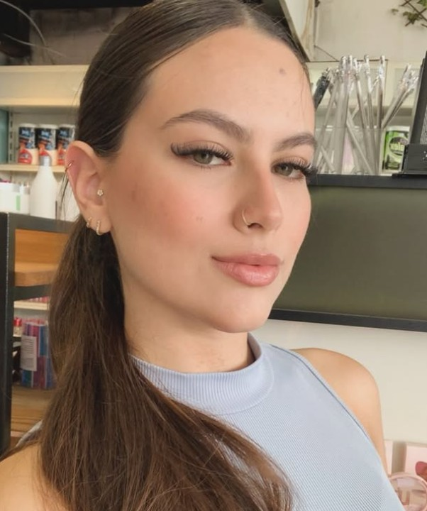
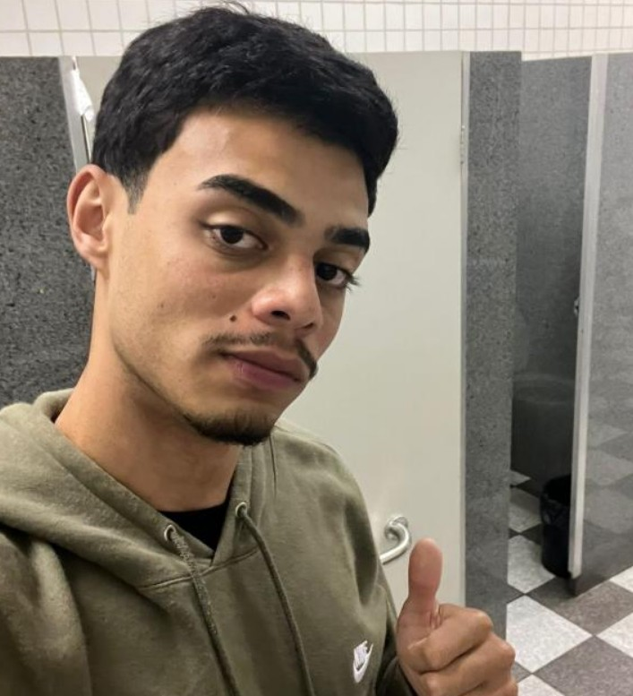
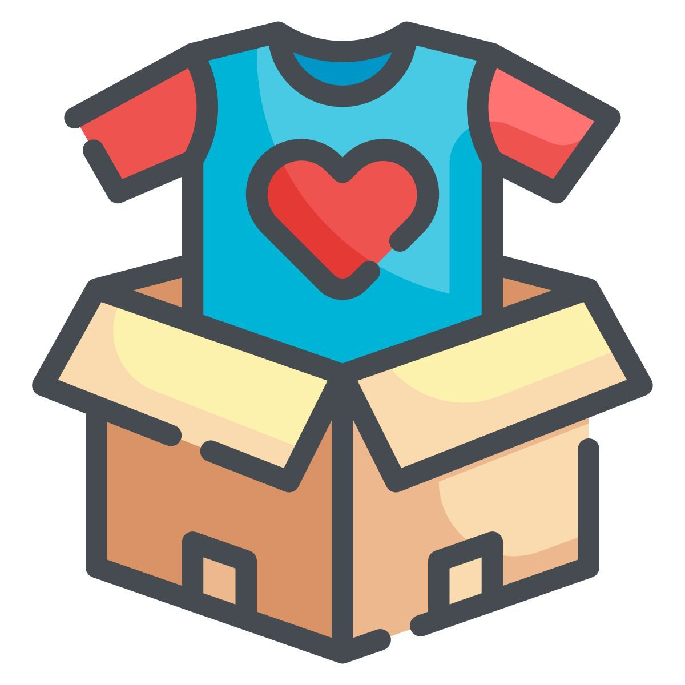

Site de um grupo
portfólio
Apresentação do grupo e dos projetos desenvolvidos durante o curso.
Saiba mais
Apresentação do grupo e dos projetos desenvolvidos durante o curso.
Saiba mais
Somos um grupo do curso de análise e desenvolvimento de sistemas da Unip e estamos criando esse site para servir como um portfólio onde colocaremos nossos projetos.






Desenvolvemos um sistema de apoio para uma empresa responsável por receber e realizar doações de produtos. O sistema organiza cadastro de doadores, produtos e beneficiários e controla entradas e saídas de doações.
Ver projeto
Trata-se de um projeto desenvolvido para uma empresa, com foco em solucionar problemas relacionados ao controle de estoque e ao gerenciamento de produtos, prezando por um melhor controle e maior agilidade nos processos.
Ver projetoAdriel - adrielthiago62@gmail.com
Amanda - amandaalmeidaribeiro156@gmail.com
Ana - anasaaalmeida@gmail.com
Jean - jeanoliveira011p@gmail.com
Marcos - marcosdiastxtp@gmail.com
Pedro - pedrobelem4010@gmail.com